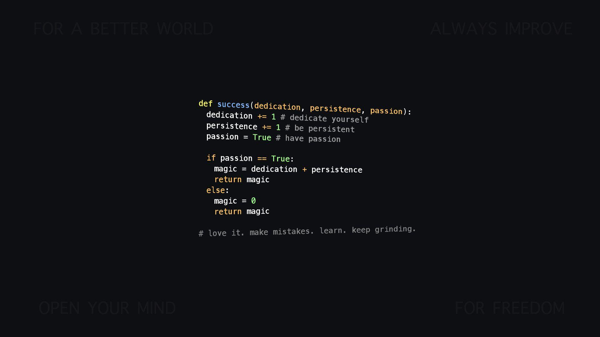
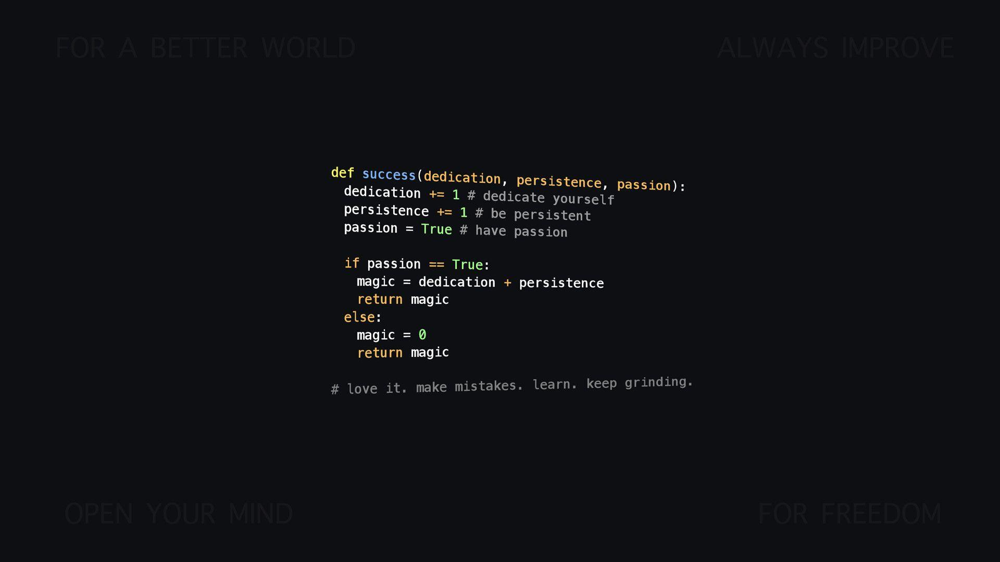
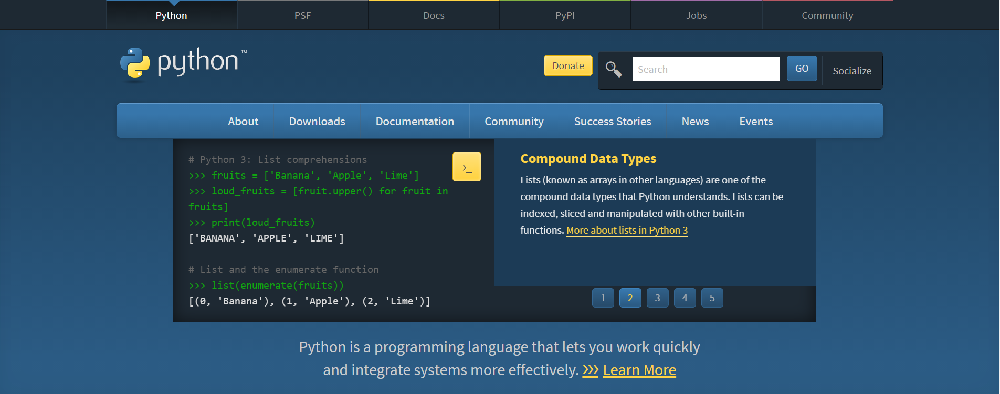
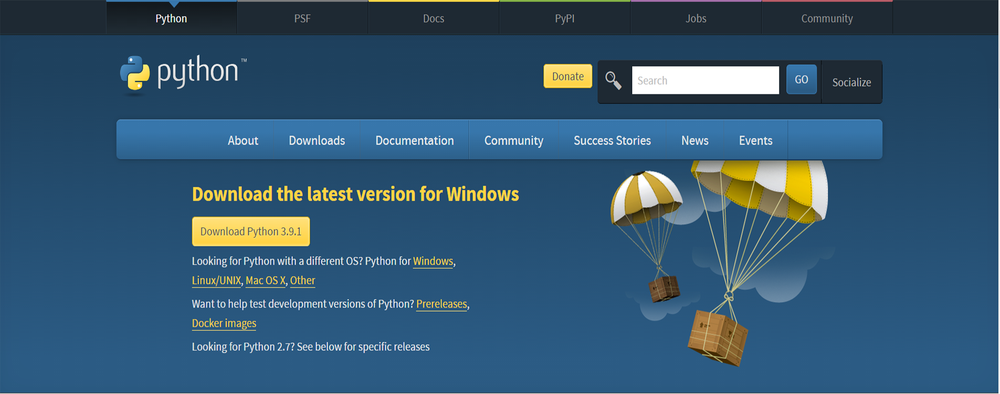
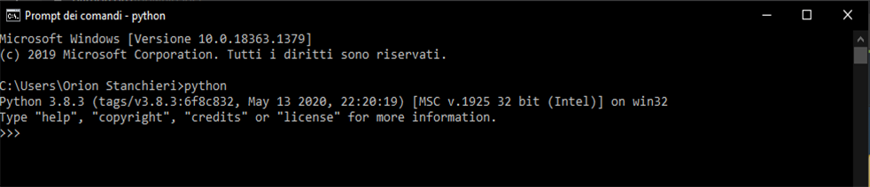
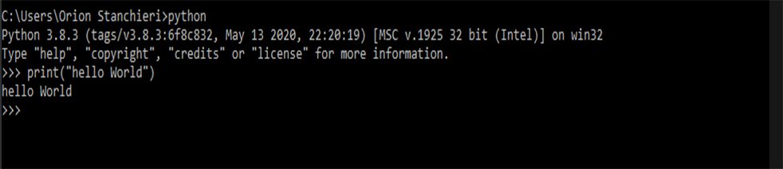

Corso di programmazione Python
Introduzione a python e alla programmazione ad oggetti
Cos'è Python?
Python è un linguaggio di programmazione di più "alto livello" rispetto alla maggior parte degli altri linguaggi, orientato a oggetti, adatto, tra gli altri usi, a sviluppare applicazioni distribuite, scripting, computazione numerica e system testing.
Cos'è la programmazione ad oggetti?
In informatica, la programmazione orientata agli oggetti è un paradigma di programmazione che permette di definire oggetti software in grado di interagire gli uni con gli altri attraverso lo scambio di messaggi.
 

Perché scegliere Python?
Python è una buona scelta in molti casi ed è anche ben posizionato per chi impara a programmare.
Iniziare ad usare Python
Scaricare Python
Per scaricare python devi andare sul sito ufficiale Python.org. Una volta qui devi selezionare il tuo sistema operativo.
 Dopo aver scaricato python per verificare la corretta installazione devi aprire il terminale e digitare "python". Se l'installazione è avvenuta correttamente questo sarà l'output:
 Altra lezione
Sottotitolo
lezione